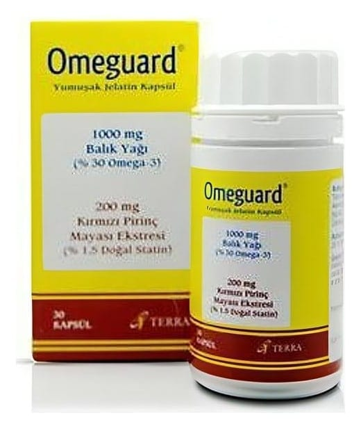

Omeguard Yumuşak Jelatin Kapsül, 30 Adet

Ne için kullanılır
KT · Bölüm 1OMEGUARD mor / koyu kahverengi renkli yumuşak jelatin kapsül halinde piyasaya sunulmuştur.
OMEGUARD yumuşak jelatin kapsüllerin her biri 1000 mg Omega-3 Balık yağı ve 200 mg Kırmızı Pirinç Mayası Ekstresi (% 1.5 Monakolin K) içerir ve kolesterol ve trigliserit düşürücü ajanlar olarak bilinen ilaç grubuna dahildir.